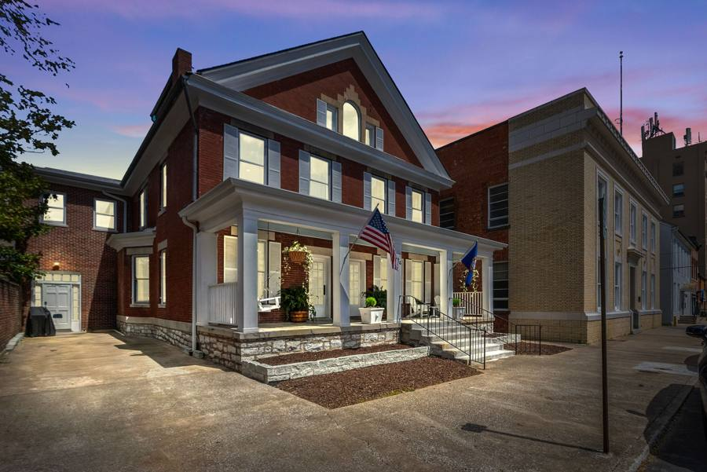

Home / Vacation rentals near Buffalo Trace Distillery
FRANKFORT, KENTUCKY
Vacation rentals near Buffalo Trace Distillery
Three homes in walkable downtown Frankfort, a few minutes from Buffalo Trace, plus a historic home in Versailles.
Home / Vacation rentals near Buffalo Trace Distillery
FRANKFORT, KENTUCKY
Three homes in walkable downtown Frankfort, a few minutes from Buffalo Trace, plus a historic home in Versailles.
THE AREA
Buffalo Trace Distillery sits on the Kentucky River at the north edge of Frankfort. Three of our homes are a few minutes from it in downtown Frankfort, so you can tour in the afternoon and walk to dinner at night.
Bourbon Street, a 1904 mansion for up to 14, is about 5 minutes away. The Bourbon Trail Loft (sleeps 4) and Historic Loft (sleeps 2) are on St. Clair Street, about 1.6 miles away. The Woodleigh in Versailles is roughly 25 minutes by car and closer to Woodford Reserve and Keeneland.
Tours at Buffalo Trace are popular. Reserve yours before you book your dates, and plan a designated driver or a ride for tasting days.
About 5 minutes from Bourbon Street.
A restored castle distillery on McCracken Pike.
About 11 miles from Frankfort.
Four Roses and Wild Turkey are a short drive southwest.
OUR HOMES
| Home | To Buffalo Trace | Bedrooms | Baths | Sleeps | Pets | Highlights |
|---|---|---|---|---|---|---|
| Bourbon Street | About 5 minutes | 7 | 3.5 | 14 | No | Speakeasy bar, billiards, poker room, theater, walk to dinner |
| Bourbon Trail Loft | About 1.6 miles | 1 | 1.5 | 4 | No | Exposed brick, two queen beds, walk to restaurants and live music |
| Historic Loft | About 1.6 miles | 1 | 1.5 | 2 | No | King bed, exposed brick, dedicated parking space |
| The Woodleigh | Roughly 25 minutes | 4 | 2 | 8 | No | Covered patio with fire pit and outdoor TV, 1903 hardwoods |

The Bourbon TrailDowntown Frankfort
1904 mansion · speakeasy · theater · sleeps 14
View home → The Bourbon Trail
The Bourbon TrailSt. Clair Street · Frankfort
2-story loft · sleeps 4
View home → The Bourbon Trail
The Bourbon TrailSt. Clair Street · Frankfort
King loft for two · sleeps 2
View home → The Bourbon Trail
The Bourbon TrailVersailles
1903 home · covered patio · sleeps 8
View home →BEST FOR
Bourbon Street is about 5 minutes away. The two lofts on St. Clair Street are about 1.6 miles away. The Woodleigh in Versailles is roughly 25 minutes by car.
Bourbon Street: 7 bedrooms, 3.5 baths, sleeps 14, in downtown Frankfort.
The Historic Loft: a remodeled loft for two with a king bed and a dedicated parking space, in walking distance of restaurants and bars.
Castle & Key is a short drive up McCracken Pike, Woodford Reserve is about 11 miles from Frankfort, and Four Roses and Wild Turkey are in nearby Lawrenceburg.
Yes. Every home on this site has a live calendar and secure checkout, so you can book directly with us. Booking here is always cheaper than the same stay on Airbnb or Vrbo, and direct guests get a complimentary early check-in or late checkout of up to 2 hours when available.
BOOK DIRECT PERK
Book on our site and get a complimentary early check-in or late checkout, up to 2 hours, when available. Same homes, same hosts, always a lower price than Airbnb or Vrbo.